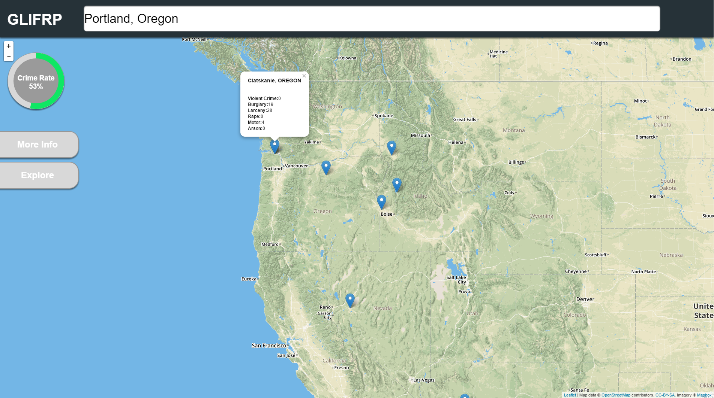

Projects

GLIFRP
The Good Life Index For Real People (GLIFRP) will let users know key information about the cities that they are interested in living in. It will inform users on things such as the housing prices, crime, unemployment, and educational institutions in those areas.

Vanish
A maze exploration game built with OpenGL and C++ for a final project, achieving a grade of 93%. Walk through the maze to find the exit before the flashlight runs out. Pick up batteries on the way to keep the flashlight on longer.